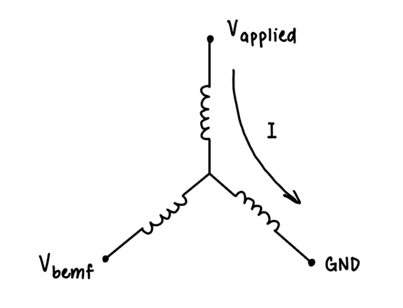
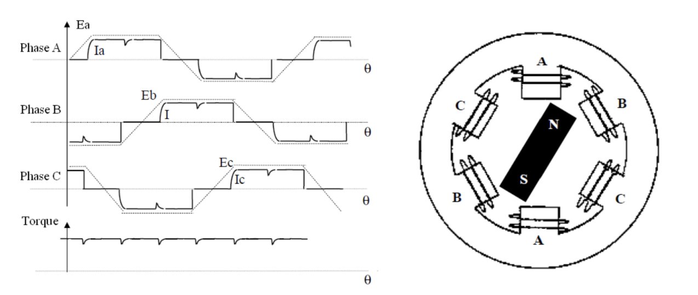
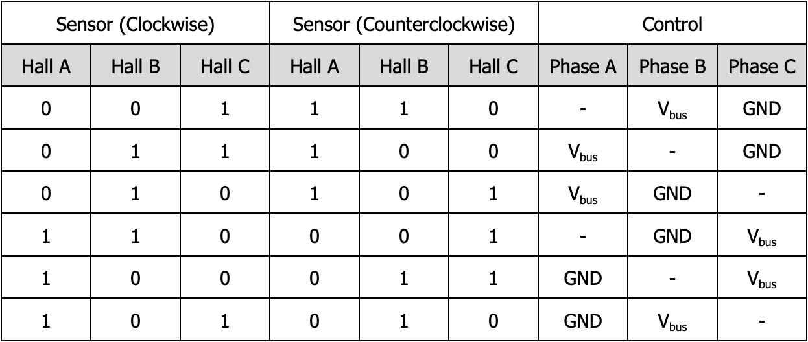
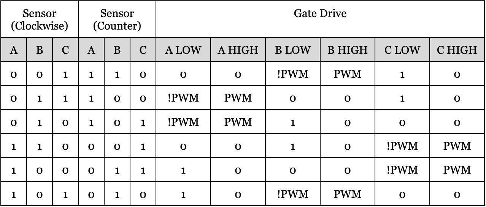

1. High Level Design
1.1 BLDC Motors
The brushless DC (BLDC) motor is often characterized by its high reliability, high efficiency, and lower cost. BLDC motors are overall considered more cost-effective relative to other categories of motors (e.g. brushed DC motors). Although the term “brushless” can be ambiguous—in fact, nearly all types of motors other than brushed DC motors are generally brushless—the term “BLDC motor” generally refers to a “permanent magnet synchronous motor with a trapezoidal Back EMF waveform shape” [1]. This is in contrast to the general definition of a permanent magnet synchronous motor (PMSM), which generally refers to a motor with a sinusoidal Back EMF waveform shape. The architecture of the BLDC motor features a permanent magnet rotor surrounded by windings serving as the stator. Most commonly, the stator consists of three phases, which is generally acknowledged to provide the best compromise between precise control and the complexity of the motor control [1]. By applying appropriate currents to each of the stator windings, a magnetic field can be generated and controlled appropriately to lead the permanent magnet serving as the rotor. This results in the rotation of the rotor in a manner synchronized with the magnetic field generated by the stator windings. In order to apply the greatest torque, the stator magnetic field should lead the rotor magnetic field by 90°.

BLDC Motor GIF, from [3].
1.2 Why Trapezoidal Control?
The ideal motor can be modeled with the wye configuration (sometimes referred to as the Y configuration) pictured below.
Figure 1. Wye Configuration
The motor is controlled by applying voltages to each of the phases. It is by means of changing these voltages that the current, and thus the magnetic field within the motor, is changed. In order to create a stator magnetic field that might lead the rotor magnetic field, one of the phases should be driven to the bus voltage, one of the phases should be driven to ground, and the remaining phase should be tristated. The state to which each of the phases should be driven depends on the target stator magnetic field. Because we define the target stator magnetic field to be leading the rotor magnetic field by 90°, the state to which each of the phases should be driven can be determined by the orientation of the rotor.
In order to understand the resulting movement of the motor from the applied voltage, it is important to understand the relationship between three key variables: the applied voltage (Vapplied), the back emf (Vbemf), and the current through the phases (I). The applied voltage is defined as the bus voltage to which the “high” phase is driven, and the back emf is defined as the voltage of the tristated terminal. The current through the phases is that which travels through the non-tristated motor windings.
The relationship between these voltages and the resulting motor characteristics can be defined:
⍵ = Kv Vbemf
τ = Kt I
Vapplied - Vbemf = I Rpha
In other words: The rotational velocity of the rotor is proportional to Vbemf, the torque applied by the rotor is proportional to the current, and the current is proportional to Vapplied and Vbemf. Notably, these relationships depend on certain characteristics unique to each motor, namely the phase resistance (Rpha), Ke, and Kt. Often, the motor supplier will not explicitly include these constants, but they can be deduced from other rated values:
Kv = ⍵rated / Vrated
Kt = τrated/ Irated
In the case of the motor that we decided to purchase, we can determine that Kv = 250 RPM/V and Kt = 0.025 Nm/A.
There are several factors for which a motor controller can be optimized, but in this case, we consider optimization of controls for a consistent torque. Rearranging our three equations, we derive the relationship between torque and applied voltage:
τ = ( Kt / Rpha ) ( Vapplied - Vbemf )
The first two terms are constants, and we can arbitrarily control the applied voltage. What remains, therefore, is Vbemf. The waveform of this voltage is dependent on the motor architecture, and serves as the property that distinguishes a BLDC motor from a PMSM motor, for example. Because the Vbemf waveform is trapezoidal for a BLDC motor, a constant torque is achieved by applying voltages with a corresponding trapezoidal waveform to the motor terminals. Under ideal commutation, this would result in a nearly constant torque resulting from the difference between Vbemf and Vapplied.
In order to imitate the waveform of Vbemf, a six-step commutation table is used to control the voltage in each of the motor phases. In order to apply the correct commutation, the applied voltage must correspond to the magnetic field of the rotor. A set of hall effect sensors providing feedback on the rotor’s magnetic field can be used to determine the instantaneous control applied to the phases—i.e. the index into the commutation table.
Figure 2. Left: Electrical Waveforms in the Two Phase ON Operation and Torque Ripple. Right: A three-phase synchronous motor with a one permanent magnet pair pole rotor. [1]
1.3 Implementing Trapezoidal Commutation: Controls
The appropriate voltage to apply to each of the terminals is determined by the motor architecture, as well as the direction in which the motor should spin (whether the stator should lead the rotor by 90° clockwise or counterclockwise). To spin the motor, the following voltages should be applied to the terminals according to the hall effect sensor readings:
Figure 3. Phase voltage commutation table. The symbol - indicates that the phase is tristated.
In order to apply these voltages, we use a half bridge on each of the phases. Notice that at any point in commutation, one phase is driven to Vbus, another to ground, and the remaining is tristated. Furthermore, in order to reduce the speed of the motor, pulse-width modulation (PWM) can be applied to the phase which is driven to the bus voltage, while the states of the other phases remain constant. In accordance with the equations from 1.2, this control toggles the stator between applying a positive torque and applying a negative torque, ultimately modulating the speed.
According to the commutation of Figure 3, the states of the gate drivers for each of the half bridges is as follows:
Figure 4. Gate drive commutation table.
1.4 Project Design Overview
The central goal of our final project is to implement the commutation of the motor on the RP2040. At its core, the logic executed by the RP2040 determines the appropriate controls to apply to each gate driver using the feedback from the hall effect sensors.
Beyond commutation, the RP2040 also handles logic to account for the physical characteristics of controlling MOSFETs—most significantly, the fact that there exists a nonzero switching time between the moment when the RP2040 outputs a new control signal, and when the circuit completes the switching of the MOSFETs. In order to avoid the shoot-through of current from Vbus to GND through the high-side and low-side MOSFETs as they are in states of not fully turned off, deadtime is introduced between the time at which one MOSFET switches off and the time at which the other switches on. Because of the time-sensitive nature of this operation, these deadtimes are executed in a PIO state machine that accordingly updates the gate drive signals as the RP2040 updates its step in the commutation table, or when the state of the high phase is toggled according to the PWM. This PIO state machine ensures that between each change in state, there would be a deadtime of 100 ns, which we estimated to be appropriate for our MOSFETs and gate drivers.
Our project includes a closed-loop motor control system, to which the user can input a target velocity using the serial monitor. We chose to use the Volts per Hertz (V/Hz) algorithm with a voltage boost. The controller uses feedback from the hall effect sensors to measure the speed of the motor. The V/Hz algorithm calculates a maximum duty cycle that increases linearly with the current speed measurement. The result of this control is that a constant flux through the motor windings is maintained. A voltage boost term is added to apply acceleration, and is capped by the rated motor speed. The user inputs a throttle, which is scaled to the maximum duty cycle. Overall, the controller limits the voltage to which the motor can be driven, as dependent on the current speed of the motor.
Our program also features a second PIO state machine for PWM generation, low-pass filtering of sensor readings, and current sensing with phase selection based on the commutation step.
The electrical systems which drive the motor are fully customized and implemented on a printed circuit board (PCB). This involves extensive circuitry considerations, component selection, layout, and debugging. Most importantly, the customized board allows us to understand the electrical properties that drive our design choices, including deadtimes and timing guarantees. In order to produce an optimized motor controller, it is imperative to understand the voltage waveforms produced by the board and the motor, and to detect issues by observing these waveforms.
1.5 Patents, Copyrights, Trademarks
BLDC motor control with trapezoidal commutation is a widely implemented control technique. The PWM generation utilizes a PIO state machine adapted from reference code provided by Raspberry Pi (Trading) Ltd. [2]. All other implementation details are original work.
1.6 AI Acknowledgement
We did not use AI to design or implement any part of our program.
1.7 Citations
[1] B. Akin, M. Bhardwaj, and J. Warriner, “Trapezoidal Control of BLDC Motors Using Hall Effect Sensors,” Texas Instruments, 2011.
[2] Raspberry Pi PIO PWM example, © 2020 Raspberry Pi (Trading) Ltd.
[3] Dave Wilson, "Brushless Motors: High Power Density with Control Overhead" Massachusetts Institute of Technology, 2018.